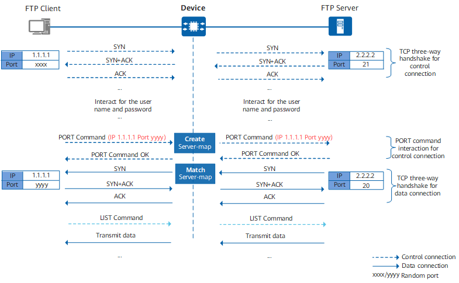

Understanding ASPF/ALG
The ASPF/ALG function can detect the application layer information of certain packets and record the key data in the application layer information in the server map. Subsequent packets matching the server map are directly permitted or have NAT performed and sessions established, without being controlled by security policies.
Take ASPF of multi-channel protocols (such as FTP, and SIP) as an example. The applications of these multi-channel protocols usually require the control channel and data channel be established. After the control channel is established, the address and port of the data channel is negotiated through the control channel, and then the data channel is established according to the negotiation result. The Device automatically generates a server map based on the address and port information carried in the application layer of the negotiation packet. Subsequent data packets match the server map and are permitted. The data channel is established successfully.

<HUAWEI> display firewall server-map Type: ASPF, 2.2.2.2 -> 1.1.1.1:yyyy, Zone: --- Protocol: tcp(Appro: ftp-data), Left-Time: 00:00:57 VPN: public -> public
Port yyyy is the data port opened by the client to the server through the control channel. The data packet for the server (2.2.2.2) to proactively access port yyyy of the client (1.1.1.1) matches the server map and is permitted.

A server map of the ASPF/ALG type is generated only when the corresponding traffic passes through the device.